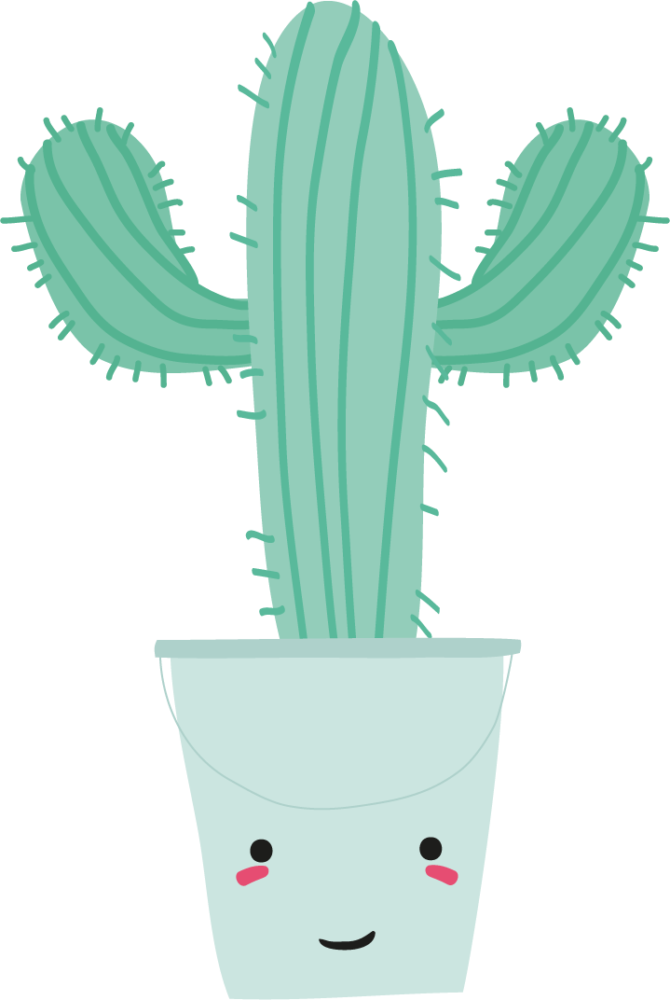

<body>
  <script src="vendor/jquery/jquery.min.js"></script>
  <style type="text/css">
    /* Global */
@import url('https://fonts.googleapis.com/css?family=Roboto');

* {
  margin: 0;
  padding: 0;
}

body {
  font-family: 'Roboto', sans-serif;
  font-size: 16px;
  background-color: #2C3E50;
  color: white;
}

/* progress - Progress Bar */
.progress {
  position: absolute;
  top: 5em;
  left: 3em;
  z-index: 1;
}

.progress-bar {
    position: absolute;
    top: 0;
    left: 0;
    width: 2px;
    height: 100%;
    border-radius: 5px;
    background-color: rgba(255, 255, 255, 0.5);
}

.progress-bar--increment {
  background-color: #E74C5B;
  position: absolute;
  top: 0;
  left: 0;
  width: 2px;
  height: 0;
  border-radius: 5px;
}

.progress-bar--circle {
  position: absolute;
  bottom: 5px;
  left: -21px;
  width: 12px;
  height: 12px;
  border-radius: 50%;
  background-color: rgba(255, 255, 255, 0.8);
  transition: all 0.1s;
}

.progress-bar--circle.active {
  background-color: #E74C5B;
}

.progress ul {
    padding: 0 1em;
    list-style: none;
}

.progress ul li {
    position: relative;
    //margin-bottom: 1em;
}

.progress ul li a {
    font-size: 1.2em;
    color: white;
    text-decoration: none;
    transition: all 0.1s;
}

.active {
 color: #E74C5B !important;
}

/* Main */
header {
  width: 100%;
  height: 500px;
}

header h1, article h2, footer h3{
    position: relative;
    top: 50%;
    font-size: 4em;
    text-align: center;
}

article {
    border: 1px solid white;
    width: 100%;
    height: 500px;
}

footer {
    height: 500px;
    width: 100%;
}
  </style>


    <nav class="progress">
    <div class="progress-bar"></div>
    <div class="progress-bar--increment"></div>
      <ul>
          <li><a href="#top">Header</a></li>
          <li id="section-orquidario"><span class="progress-bar--circle"></span></li>
          <li id="section-psicologia"><span class="progress-bar--circle"></span></li>
          <li id="section-danca"><span class="progress-bar--circle"></span></li>
          <li id="section-medico"><span class="progress-bar--circle"></span></li>
          <li id="section-funcional"><span class="progress-bar--circle"></span></li>
      </ul>
    </nav>

    <header id="top">
      <h1>Welcome to the top!</h1>
    </header>

      <article class="article" id="article-1">
        <h2>Article 1</h2>
      </article>

      <article class="article" id="article-2">
        <h2>Article 2</h2>
      </article>

      <article class="article" id="article-3">
        <h2>Article 3</h2>
      </article>

      <article class="article" id="article-4">
        <h2>Article 4</h2>
      </article>

      <article class="article" id="article-5">
        <h2>Article 5</h2>
      </article>

    <footer id="bottom">
      <h3>Welcome to the bottom!</h3>
    </footer>

    <script type="text/javascript">
      $(document).ready(function(){

  var docHeight = $(document).height()
  $(".progress").height(docHeight - 100)
  $(".progress ul li").css("margin-bottom", docHeight/6 - 100)

  //highlight navigation
  $(window).scroll(function() {
    var windowpos = $(window).scrollTop();
    $('nav li a').removeClass('active');
    $('.progress-bar--circle').removeClass('active');

    if (windowpos > $('#top').offset().top) {
      $('nav li a').removeClass('active');
      $('a[href$="#top"]').addClass('active');
    } //windowpos

    if (windowpos > $('#article-1').offset().top) {
      $('nav li a').removeClass('active');
      $('a[href$="#article-1"]').addClass('active');
      $('a[href$="#article-1"] .progress-bar--circle').addClass('active');
    } //windowpos

    if (windowpos > $('#article-2').offset().top) {
      $('nav li a').removeClass('active');
      $('a[href$="#article-2"]').addClass('active');
      $('a[href$="#article-2"] .progress-bar--circle').addClass('active');
    } //windowpos

    if (windowpos > $('#article-3').offset().top) {
      $('nav li a').removeClass('active');
      $('a[href$="#article-3"]').addClass('active');
      $('a[href$="#article-3"] .progress-bar--circle').addClass('active');
    } //windowpos

    if (windowpos > $('#article-4').offset().top) {
      $('nav li a').removeClass('active');
      $('a[href$="#article-4"]').addClass('active');
      $('a[href$="#article-4"] .progress-bar--circle').addClass('active');
    } //windowpos

    if (windowpos > $('#article-5').offset().top) {
      $('nav li a').removeClass('active');
      $('a[href$="#article-5"]').addClass('active');
      $('a[href$="#article-5"] .progress-bar--circle').addClass('active');
    } //windowpos

    if (windowpos > $('#bottom').offset().top) {
      $('nav li a').removeClass('active');
      $('a[href$="#bottom"]').addClass('active');
    } //windowpos

    // Scrollbar progression
        // pixels scrolled from top
    var scrollTop = $(window).scrollTop()
        // document height
    var    docHeight = $(document).height()
        // window height
     //var   winHeight = $(window).height()
        // percent of document scrolled
     var   scrollPercent = ((scrollTop) / docHeight)

     var   scrollPercentRounded = Math.round(scrollPercent*100)

    // incement progress bar as user scrolls
    $('.progress-bar--increment').css('height', scrollPercentRounded + '%');
  });

}); // on load

    </script>
  </body>